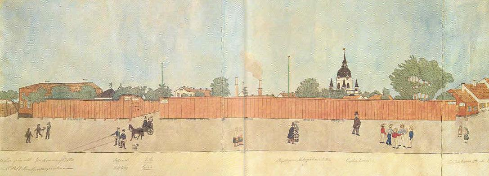

Södermalm i tid och rum
FÖNSTERUTSIKT VID RENSTJERNAS GRÄNDTre gathörn bryter det långa, höga och faluröda planket: Kocksgatan, Pihlgatan och Tjerhofsgatan.
Längs gatan en rad scener inför Josabeths rena och ordnande färgsyn. Från vänster: tre disputerande sotare, därefter två repslagarpojkar som flätar var sitt rep fastsatt i hushörnet. Bredvid står knähunden Cherie, medan doktor Levin denna gång kommer i en enklare tvåhjulig vagn med kusken Eric och hälsar med en ljusare, låg hatt. Alldeles under fönstret står två dalkullor i fårskinnspälsar.
Längre till höger kommer repslagare Malmqvist själv med dotter.
Det är Katarina kyrktorn som dominerar bilden.
Tre blad har hopfogats med söm till denna stora komposition som annars vikts på vederbörligt sätt. Ibland har hon med nål och tråd kunnat åstadkomma tillräckligt stora bildunderlag.

På två bilder visas dåvarande Renstjärnasgrändens utseende med fru Bergqvists hus. Alldeles vid sidan av detta fanns ett bakelsestånd. Bland folket som rör sig på gatan märks bl a förvaltaren vid "Sjö-Tulls-Kammaren" Lud- vig Ahlsell med döttrar, söner och sonhustru. Tullförvaltaren bodde i Pilgatan 24 (nuv Folkungagatan).
Själv bodde Malmqvist vid Pilgatan 27.